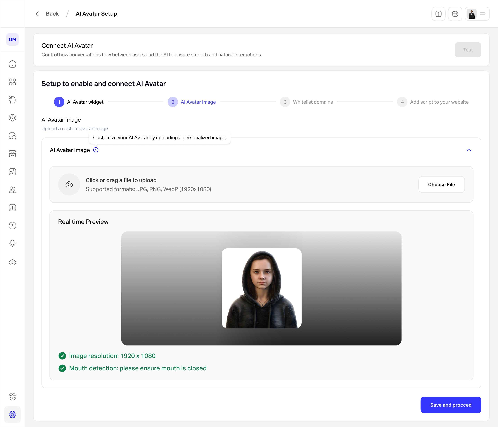
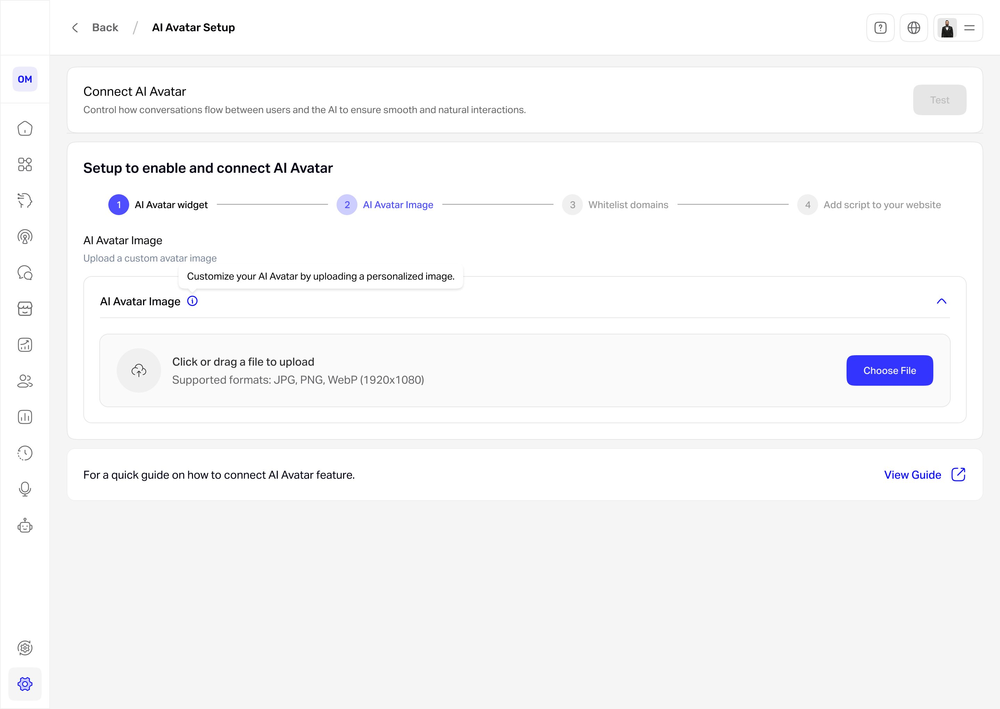

AI avatar setup that checks itself.
Connecting an AI avatar meant juggling an image spec, domain whitelisting, and a script embed, with no way to tell if any of it was right until the end. I designed a guided four-step wizard with real-time validation and a live preview, so users see the avatar is correct before it ever goes live.

Connecting an AI avatar shouldn't feel like wiring up a server.
WideBot lets a business drop an AI avatar onto its own site to talk to visitors. But turning it on meant stitching together three unrelated technical tasks: uploading an image to an exact spec, whitelisting the domains it could run on, and embedding a script, with no feedback on whether any of it was correct until the very end. The people doing this are often non-technical, so they stalled, or shipped an avatar that didn't work. As the solo product designer, working with a PM and engineers, I designed the setup flow, its validation, and the UI.
What wasn't working
- Opaque and multi-step. Setup spanned unrelated tasks (image, domains, script) with no order, no progress, and no sense of how much was left.
- No feedback until the end. Users couldn't tell whether their image met spec or whether the avatar would render correctly until after they finished, so they didn't trust the result.
- Easy to break silently. A wrong resolution or an open-mouth photo quietly degraded the avatar, and nothing caught it before it went live.
Users couldn't see whether it was working, so they couldn't trust that it was.
The hard part wasn't the steps. It was seeing that it worked.
Every problem pointed the same way. The individual steps were manageable; what was missing was confidence. Users needed to see that each piece was right as they went, not discover a broken avatar after publishing. So the design bet was to make correctness visible: validate as you go, and show the result before anyone commits.
Show it works before you ship it.
Four decisions that turned setup into a guided path
Scroll to explore the full flow →
One flow, four steps, validation where it counts. The wizard keeps the four stages in view, and the image step, the one most likely to go wrong, validates on upload and routes a bad image to a clear reason and a re-upload instead of a broken avatar.
A four-step wizard with a persistent stepper
Setup spans unrelated tasks, so I split it into Widget, Avatar Image, Whitelist Domains, and Add Script, with a stepper that always shows where you are and what is left. I considered one long settings page, but only a stepper made progress and recovery legible across steps that have nothing to do with each other.
Validate the image at upload, not at the end
The image has hard requirements: 1920×1080, and a closed mouth so the avatar animates cleanly. Instead of accepting anything and failing on save, the design checks resolution and detects an open mouth the moment a file lands, so a bad image never reaches the avatar.
A real-time preview before commit
The uploaded image renders exactly as the avatar will appear, with the validation results beside it. This is the decision the whole flow rests on: it replaces trusting the result after publishing with seeing it is right before saving.
Inline guidance over a separate guide
Tooltips and on-screen hints sit at each step, with documentation one click away rather than required reading. Help lives where people actually get stuck, not in a doc they have to leave the flow to find.
What the user sees

A guided flow, always visible. The stepper keeps the four stages, Widget, Avatar Image, Whitelist Domains, and Add Script, in view, so the technical setup never feels open-ended.
On the Avatar Image step, the upload is checked instantly for resolution and a closed mouth, then rendered in the live preview shown at the top of the page, so the user confirms the avatar will look right before saving rather than finding a problem after it goes live.
How I'd judge the design
| Metric | Target | Why it matters |
|---|---|---|
| Setup completion (start to script live) | ≥ 80% | Adoption |
| Image valid on first upload | ≥ 85% | Efficiency |
| Setups reaching a broken avatar | ≤ 2% | Quality |
| Time to connect | under 5 min | Efficiency |
| Setup satisfaction | ≥ 4/5 | Experience |
What I'd expect to change
- Clearer, less intimidating setup for non-technical users.
- Fewer malformed-image errors, caught at upload instead of after publish.
- More trust in the result, because the avatar is previewed before it goes live.
Setup stopped being a leap of faith and became something you can see working.
If I did it again: I'd validate the flow with real operators hitting the whitelist and script steps, pressure-test the mouth detection for false positives (a closed mouth wrongly flagged is its own frustration), and instrument the funnel to confirm the completion and error targets actually hold in production.
Strict validation vs. friction. Blocking an open-mouth or wrong-size image prevents a broken avatar, but risks false positives that stop a valid image. I accepted the stricter check because a silently broken avatar is worse, and paired it with a clear reason and an obvious way to re-upload.